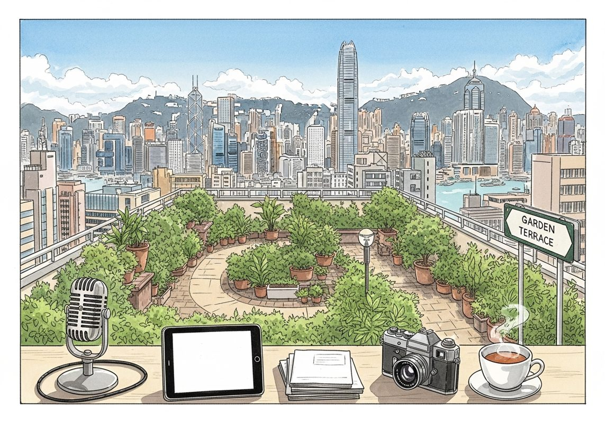

7/25

今日更新
The Fight Over Open Source AI, Anthropic's $1.5B Payout, NYC Socialists: Evictions = Violence?
来源：All-In with Chamath, Jason, Sacks & Friedberg
状态：已读完整音频 transcript
这期播客深入探讨了AI领域开源与闭源模型之间的激烈冲突、技术快速商品化的趋势，以及由此引发的知识产权争议和大型科技公司的战略投资，对于关注AI产业格局、政策走向及投资机会的中文读者极具参考价值。
- 中国开源AI的崛起与美国政策困境：本期播客的核心讨论围绕中国AI模型Kimmy K3的横空出世。这款由Moonshot AI开发的开源模型，在性能上已与Anthropic的Opus 4.8和GPT 5.6等领先模型不相上下，但成本却低约50%。这一进展在美国引发了恐慌，类似于2025年初DeepC模型出现时的情景。美国白宫已介入讨论，考虑禁止中国开源模型。Axios报道称白宫倾向于禁止，而Wired则指出商务部官员Harold Letnick反对禁令，主张激励美国本土实验室开发更好的开源模型。这种内部意见分歧反映了美国政府在应对中国AI崛起时的复杂心态。David Sachs认为，禁止开源模型将是“悲剧性错误”，会损害美国在AI竞赛中的地位，并指出Anthropic等公司试图通过监管捕获来寻求政府保护，以限制竞争。
- “蒸馏”之争：技术、伦理与商业策略：“蒸馏”（Distillation）是本期播客反复提及的关键概念。它指的是通过大量提问和观察一个模型的输出，然后利用这些输出数据来训练自己的模型。Anthropic指控Moonshot AI通过“工业规模蒸馏”开发了K3模型。然而，Chamath和Sachs指出，如果Anthropic真的关心蒸馏问题，他们本可以实施“了解你的客户”（KYC）政策来阻止大规模账户创建和数据外泄，但他们为了追求收入增长而未这样做。嘉宾们认为，蒸馏在科技行业是一种普遍现象，OpenAI曾从《纽约时报》蒸馏，Anthropic也曾从出版商蒸馏。因此，Anthropic指责中国公司蒸馏，却不愿从自身找原因，显得“虚伪”。
- AI模型商品化浪潮与价值转移：Chamath强调，AI模型正以惊人的速度商品化。一旦一个模型公布其性能标准，其他模型（无论是开源还是闭源）往往能在几周内达到甚至超越其表现。这意味着基础模型本身的价值捕获能力正在迅速减弱，真正的商业模式将转移到应用层和基础设施层（如云服务和芯片）。他认为，当前闭源前沿实验室的高估值，很大程度上是基于对未来价值捕获的假设，但这种假设正受到商品化趋势的严峻挑战。如果政府介入并限制开源，将导致美国企业支付高昂的“代币税”，使美国在AI成本上处于劣势，最终可能引发市场混乱。这种监管干预不仅无法解决蒸馏问题，反而可能让美国企业在全球竞争中处于不利地位。
- 开源AI的普惠价值与中国长期战略：Freeberg从多个角度阐述了开源AI的巨大价值。首先，开源模型通常成本低廉，能让更广泛的企业和个人受益，促进经济增长和就业创造，避免AI价值集中在少数公司手中。他将其比作互联网早期的Netscape与Apache/Firefox/Chrome之争，开源最终推动了整个互联网生态的繁荣。其次，他认为“蒸馏”本质上是“基准测试”，而非传统意义上的IP盗窃，因为AI学习的是输出而非源代码。最后，Freeberg提出了一个引人深思的观点：中国可能正在通过推动AI的开源和商品化，来压缩知识经济和服务经济的价值，从而将全球经济的重心重新导向制造业和能源生产。在这两个领域，中国拥有巨大的产能和电力优势，这可能是其长期的战略布局。
- 知识产权的灰色地带与Anthropic的“自食其果”：Anthropic近期因使用盗版书籍训练Claude模型，支付了高达15亿美元的和解金，创下美国版权诉讼史上的最高纪录。这一事件凸显了AI训练中知识产权的复杂性。J.Cal指出，Anthropic和OpenAI一方面声称自己有权在“合理使用”原则下训练模型，即使创作者不愿；另一方面却指责中国公司“蒸馏”其模型是IP盗窃。这种“只许州官放火，不许百姓点灯”的立场被嘉宾们视为“完全虚伪”。Sachs认为，Anthropic将中国公司的行为定性为“IP盗窃”，可能是一个“致命错误”，因为它会削弱其自身在与《纽约时报》等内容创作者的版权诉讼中“合理使用”的辩护。内容创作者应联合起来，要求AI公司支付内容使用费，就像音乐行业和YouTube的案例一样。
历史精选
Arena Show Part I: Idea Dinner + YC Continuity
来源：Acquired
状态：已读音频详细听记
本期节目融合了科技投资界的“想法晚餐”与对全球顶级创业加速器Y Combinator（YC）后期基金的深度剖析。它不仅为听众提供了来自Packy McCormick、Mario Gabriele等知名投资人的公开市场投资洞察，更通过YC Continuity基金负责人Ani Harari的分享，揭示了YC如何从早期孵化器发展成为覆盖公司全生命周期的“创业大学”及其独特的投资哲学。本期节目适合对公开市场投资策略、风险投资演变趋势以及创业公司成长路径感兴趣的科技爱好者、创业者和投资者。
- 现场盛况与“想法晚餐”开局：播客在西雅图气候承诺竞技场举行，主持人Ben Gilbert和David Rosenthall对现场观众的热情反馈感到激动，强调了现场互动与线上交流的不同体验。本期节目分为两大部分：首先是“想法晚餐”，嘉宾和主持人将提出各自的最佳投资想法，并由评委Sho Nuyada评分。节目还介绍了赞助商Lagora，一个利用AI重塑法律团队工作方式的“敏捷操作系统”。Lagora通过表格化回顾和Lagora Agent等功能，显著提升法律工作效率和价值。其数据亮点包括在头对头试点中70%的胜率，以及在10个月内营收从100万美元增长到1亿美元ARR，展现了AI在传统行业中的巨大变革潜力。
- 嘉宾的投资选择：Snowflake与Composed：在“想法晚餐”环节，Mario Gabrielli首先推荐了数据仓库公司Snowflake。他指出，尽管Snowflake股价从IPO高点403美元跌至183-185美元，但其基本面强劲，收入增长105%，净留存率高达178%，自由现金流超过8000万美元。Mario认为，在Frank Slootman这位擅长在困难时期管理公司的“可持续增长CEO”领导下，Snowflake具备多年复合增长潜力，是数据增长趋势下的“安全选择”。Packy McCormick则选择了自动化交易策略公司Composed，该策略根据国债和纳斯达克指数表现，在市场好时投资三倍杠杆科技股（如TQQQ），市场差时投资长期国债，他认为这是一个“非常安全”的投资方式。Packy还额外提到了Twitter的巨大货币化潜力，认为其8000万美国用户若每月支付3美元，每年可带来30亿美元收入，并强调了其盈利和裁员的必要性。
- 主持人的投资押注：OpenDoor与Coinbase：主持人Ben Gilbert出人意料地“加倍下注”于他之前的“最大输家”OpenDoor。他认为OpenDoor在万亿美元级的房地产市场中占据主导地位，击败了Zillow的iBuying业务，去年营收80亿美元，市值仅50亿美元，且已实现调整后EBITDA为正。Ben强调，房地产市场用户体验差，而OpenDoor提供了最佳解决方案，创始人Eric Wu能力出众，公司已具备“不可能再低”的价值。David Rosenthall则选择了加密货币交易平台Coinbase，将其视为一项“价值投资”。他指出Coinbase在过去12个月产生了100亿美元自由现金流，市值340亿美元，拥有强大的网络效应和品牌优势，是Web3浪潮中最成熟的公司。尽管存在Coinbase前员工抛售股票和人才流失的担忧，以及FTX在衍生品市场可能更具优势的讨论，David仍认为Coinbase在当前市值下是一个“绝对的便宜货”。
- 亚马逊的深层护城河与观众投票：Ben Gilbert虽然未将亚马逊作为最终选择，但详细阐述了其投资价值。他指出亚马逊市值1.25万亿美元，过去12个月营收4700亿美元，市销率仅2.5倍。他强调，市场低估了其零售业务，而AWS（亚马逊云服务）作为高利润业务，即使在750亿美元的庞大基数上仍保持37%的年增长率，远超竞争对手。亚马逊零售业务的“亏损”实则源于其在仓库和数据中心上的巨额资本支出，构建了极深的护城河，即使停止投资也能产生大量现金流。Ben总结了投资的五大标准：上涨空间、下跌空间、时机、新颖性和“闪光点”，并认为亚马逊在零售和AWS领域都表现出色。最终，在现场观众的拍手投票中，Coinbase击败了Snowflake，成为“想法晚餐”的赢家。
- YC Continuity：从加速器到后期增长：节目的第二部分深入探讨了Y Combinator (YC) 的“连续性基金”（YC Continuity Fund）。主持人介绍了基金负责人Ani Harari，她曾是Andreessen Horowitz的合伙人，现在领导YC Continuity。Ani解释，YC Continuity的诞生源于早期创业者希望YC在12周加速器项目结束后，能继续提供支持和投资。YC已从传统的线下模式转变为“远程优先”，50%的项目批次来自国际。YC Continuity不仅是硅谷最大、最活跃的后期增长投资者之一，已向B、C、D轮公司投入数十亿美元，更致力于成为所有具有持久竞争力的VC公司的长期合作伙伴，其使命是成为公司生命周期的合作伙伴。
Demographics Driving Real Estate - [Business Breakdowns, EP.190]
来源：Business Breakdowns
原链接：https://joincolossus.com/episode/demographics-driving-real-estate/
状态：已读网页 transcript
本期播客深入探讨了人口结构如何作为房地产投资的根本驱动力，为投资者和战略家提供了一个理解市场长期趋势、识别被忽视机遇以及应对未来挑战的独特框架。
- Fernando De Leon与Leon Capital的独特视角：本期节目邀请了Leon Capital的创始人Fernando De Leon，他所领导的Leon Capital并非传统的私募股权基金或家族办公室，而是一个多元化的综合性企业，旗下拥有14个业务，涵盖房地产、医疗保健和金融服务等多个领域。主持人Matt Reustle指出，尽管业务多元，但这些板块之间存在着深刻的内在联系和相互启发。这种连接的“组织”正是对人口结构深刻洞察。Fernando De Leon被认为是解读人口动态的专家，他的商业模式建立在对人口趋势的精准预测之上，这使得Leon Capital能够在一个看似复杂的多元化组合中找到统一的投资逻辑和协同效应，从而实现长期价值创造。
- 人口结构：房地产投资的基石：Fernando De Leon强调，人口结构是驱动房地产市场最核心、最基础的因素。他通过分析特定区域的人口增长、年龄构成、家庭形成模式、收入水平以及迁移趋势等关键指标，来识别具有吸引力的投资机会。例如，年轻人口的涌入可能预示着对租赁住房和首次购房的需求增加；而特定年龄段人口的增长则可能带动医疗设施或养老地产的发展。这种基于人口学的投资策略，使得Leon Capital能够超越短期的市场波动和宏观经济噪音，专注于那些拥有坚实人口基础和可持续增长潜力的区域，从而做出更具前瞻性和韧性的投资决策。
- 挑战与机遇：住房开发与资源管理：房地产市场具有固有的周期性，充满挑战。Fernando De Leon分享了Leon Capital在应对这些挑战时的策略，包括高效的资源管理、系统优化以及强大的下行保护机制。在住房开发领域，面临着土地成本、建筑成本、劳动力短缺以及监管审批等诸多障碍。Leon Capital通过精细化管理和风险对冲工具，力求在市场波动中保持稳健。例如，通过多元化投资组合来分散风险，或在项目初期就建立起足够的安全边际。这种对风险的审慎态度和对效率的极致追求，是其在复杂房地产环境中取得成功的关键。
- 次级市场与全球贸易流动的深远影响：除了传统的一线城市，Leon Capital也积极寻找次级市场的投资机会。这些市场往往被大型机构投资者所忽视，但可能因特定的人口结构变化、产业转移或政策支持而展现出巨大的增长潜力。一个显著的例子是“近岸外包”（nearshoring）趋势对房地产市场的影响。随着全球供应链的重塑，许多企业选择将生产基地从遥远的海外转移到更靠近本土市场的国家或地区（如墨西哥与美国之间）。这种趋势极大地刺激了边境地区和物流枢纽对工业地产、仓储设施乃至工人住房的需求，为Leon Capital带来了独特的投资机遇。
- 未来展望：数据中心、清洁能源与技术变革：展望未来，Fernando De Leon认为房地产行业将受到技术进步和新兴产业的深刻影响。数据中心和清洁能源是两个关键领域。随着数字化转型的加速，对数据存储和处理的需求呈爆炸式增长，这直接推动了对大型、专业化数据中心地产的需求。同时，全球对可持续发展的关注也使得清洁能源项目（如太阳能、风能发电站及其配套设施）成为新的房地产投资热点。这些新兴领域不仅需要特定的土地和基础设施，也可能带动周边区域的人口和经济活动，从而创造出全新的房地产投资范式和增长点。